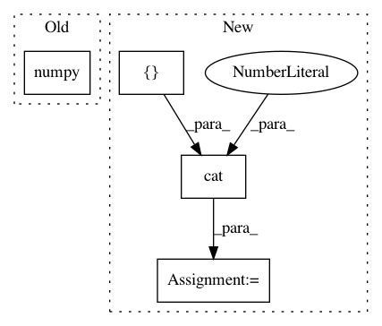

69dd0827d09eae0b4e6b95df854b2814175c9248,torch_geometric/nn/models/signed_gcn.py,SignedGCN,create_spectral_features,#SignedGCN#Any#Any#,39
Before Change
def create_spectral_features(self, pos_edge_index, neg_edge_index):
edge_index = torch.cat([pos_edge_index, neg_edge_index], dim=1)
N = edge_index.max().item() + 1
edge_index = edge_index.to(torch.device("cpu")).detach().numpy()
pos_val = torch.full((pos_edge_index.size(1), ), 1, dtype=torch.float)
neg_val = torch.full((neg_edge_index.size(1), ), -1, dtype=torch.float)
val = torch.cat([pos_val, neg_val], dim=0)
After Change
row, col = edge_index
edge_index = torch.cat([edge_index, torch.stack([col, row])], dim=1)
val = torch.cat([val, val], dim=0)
edge_index, val = coalesce(edge_index, val, N, N)
// Borrowed from:
In pattern: SUPERPATTERN
Frequency: 4
Non-data size: 4
Instances
Project Name: rusty1s/pytorch_geometric
Commit Name: 69dd0827d09eae0b4e6b95df854b2814175c9248
Time: 2019-04-10
Author: matthias.fey@tu-dortmund.de
File Name: torch_geometric/nn/models/signed_gcn.py
Class Name: SignedGCN
Method Name: create_spectral_features
Project Name: ClementPinard/FlowNetPytorch
Commit Name: c6a079c70368b41873f3288b05b74d38f74b6680
Time: 2018-03-30
Author: clement.pinard@parrot.com
File Name: run_inference.py
Class Name:
Method Name: main
Project Name: Scitator/catalyst
Commit Name: 3ad9948c94946d7114e34d572cd280050b87c391
Time: 2018-10-16
Author: ngxbac.dt@gmail.com
File Name: dl/callbacks.py
Class Name: F2Callback
Method Name: on_batch_end
Project Name: arraiy/torchgeometry
Commit Name: 50839f8ed95147c71f9f045495ed45380a2ce513
Time: 2019-11-19
Author: priba@cvc.uab.cat
File Name: test/color/test_hls.py
Class Name: TestRgbToHls
Method Name: test_nan_rgb_to_hls